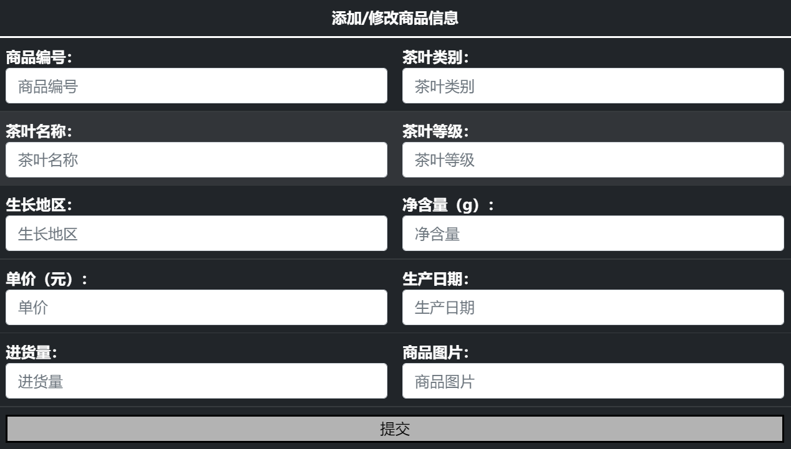

添加新的商品信息，并且可以选择修改商品剩余量
此功能仅供总管理员使用，可以添加和删除管理员但权限都在超管权限之下
同时，管理员可以通过“查看管理员按钮查看管理员的信息”
供管理员观察到商品展示信息，并且可以通过此页面直接对商品进行信息的修改、下架商品、直接删除商品的功能
点击“修改信息”按钮，界面将弹出修改信息框，用户可选择性对商品属性进行修改
点击“下架商品”按钮，商品将从暂时货架移除，同时显示在下架商品页面显示并支持再次上架
点击“清空”按钮，商品将会被永久清除，但会有记录留存
将对清除的商品信息进行展示，并且可以通过点击“复选框”“删除”按钮选择记录进行清除
此页面将对下架的商品进行展示
点击“重新上架”按钮，可以选择性修改商品属性并重新将商品上架
点击“清除”按钮将对下架商品进行永久清除，并产生清除记录